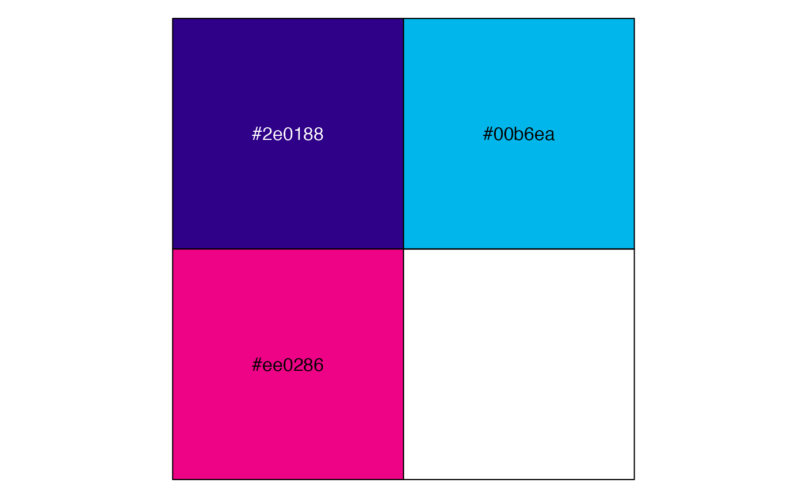
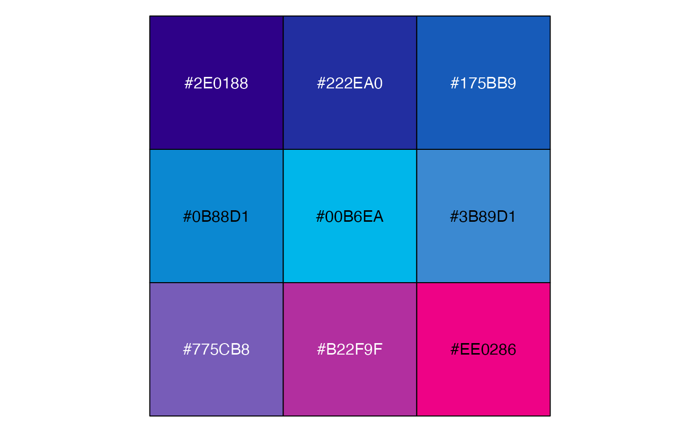
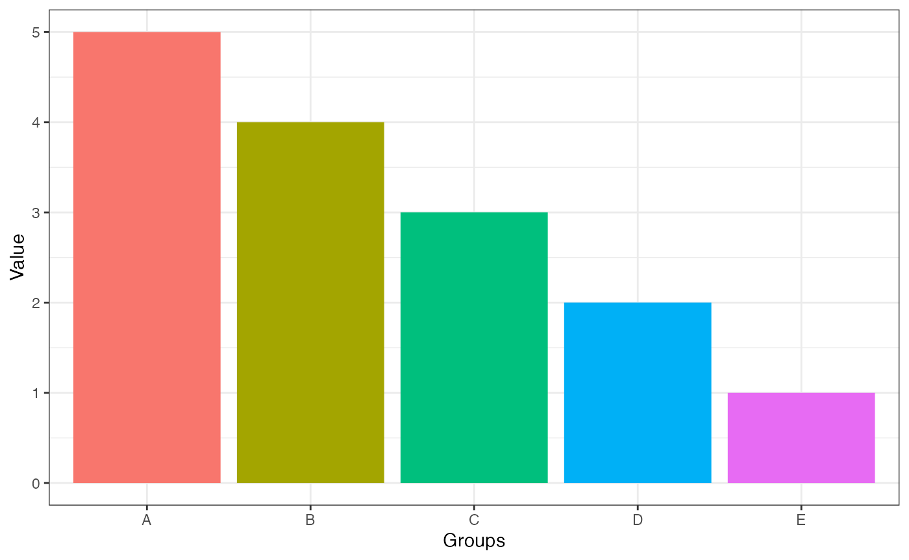
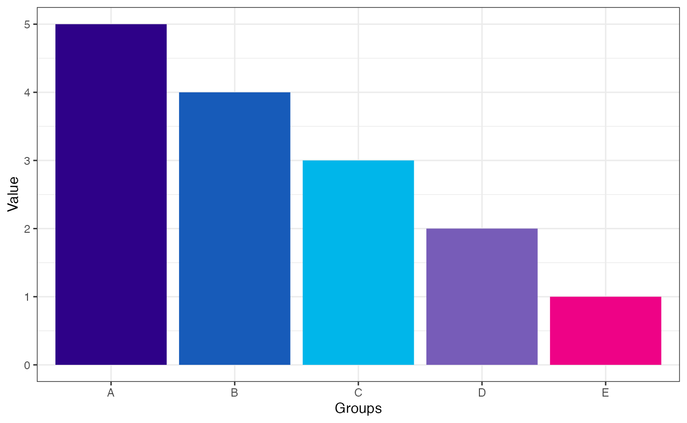

Installation
You can install AcademicThemes from CRAN with:
install.packages("AcademicThemes")You can also install the development version of
AcademicThemes from GitHub with:
# install.packages("devtools")
devtools::install_github("hwarden162/AcademicThemes")Accessing Colour Palettes
AcademicThemes is a package for recolouring
ggplot2 plots to use colours from different academic
institutions. These palettes are accessed through the
academic_colour_palette() function. If no arguments are
specified then a list of all the colour palettes are returned.
library(AcademicThemes)
#> ==AcademicThemes================================
#> Please be mindful of the effects of your choice
#> of colour palette on people who are colour blind
#> ================================================
palettes <- academic_colour_palette()
head(palettes)
#> $ahrc
#> [1] "#192B65" "#707FB1" "#9BA957" "#F3AB3E"
#>
#> $bbsrc
#> [1] "#293C91" "#C43089" "#E5B440"
#>
#> $cgem_igc
#> [1] "#0E2E5A" "#D22D48"
#>
#> $cruk
#> [1] "#2E0188" "#00B6EA" "#EE0286"
#>
#> $eastbio
#> [1] "#284E96" "#386C4D" "#E07E38" "#BB2D4A"
#>
#> $epsrc
#> [1] "#711D4B" "#459B8D"If you want to access just one colour palette you can give the name of the colour palette as an argument. Here is an example for accessing the colours of the Cancer Research UK logo.
library(scales)
cruk_palette <- academic_colour_palette("cruk")
cruk_palette
#> [1] "#2E0188" "#00B6EA" "#EE0286"
show_col(cruk_palette)
To access the names of the palettes you can use the
academic_colour_palette_names() function or they are all
listed with examples of the colours in the Colour Palettes article of
this site.
By default this will return just the colours in the palette, but if you would like to use the palette to create a palette with a different number of colours you can supply this as an argument.
cruk_palette_9 <- academic_colour_palette("cruk", n = 9)
cruk_palette_9
#> [1] "#2E0188" "#222EA0" "#175BB9" "#0B88D1" "#00B6EA" "#3B89D1" "#775CB8"
#> [8] "#B22F9F" "#EE0286"
show_col(cruk_palette_9)
Recolouring ggplot2 Plots
These palettes can be used to automatically recolour
ggplot2 plots similar to packages such as
viridis. Here is an example of a plot
library(tidyverse)
#> ── Attaching core tidyverse packages ──────────────────────── tidyverse 2.0.0 ──
#> ✔ dplyr 1.1.2 ✔ readr 2.1.4
#> ✔ forcats 1.0.0 ✔ stringr 1.5.0
#> ✔ ggplot2 3.4.2 ✔ tibble 3.2.1
#> ✔ lubridate 1.9.2 ✔ tidyr 1.3.0
#> ✔ purrr 1.0.1
#> ── Conflicts ────────────────────────────────────────── tidyverse_conflicts() ──
#> ✖ readr::col_factor() masks scales::col_factor()
#> ✖ purrr::discard() masks scales::discard()
#> ✖ dplyr::filter() masks stats::filter()
#> ✖ dplyr::lag() masks stats::lag()
#> ℹ Use the conflicted package (<http://conflicted.r-lib.org/>) to force all conflicts to become errors
tibble(
x = LETTERS[1:5],
y = 5:1
) %>%
ggplot() +
aes(x = x, y = y, fill = x) +
geom_col() +
guides(fill = "none") +
labs(
x = "Groups",
y = "Value"
) +
theme_bw()
One of the colour palettes can be used to recolour this plot using
the scale_fill_academic_d() function.
tibble(
x = LETTERS[1:5],
y = 5:1
) %>%
ggplot() +
aes(x = x, y = y, fill = x) +
geom_col() +
guides(fill = "none") +
labs(
x = "Groups",
y = "Value"
) +
theme_bw() +
scale_fill_academic_d("cruk")
Any function called scale_colour_* will change the
colour of the plot and any function called scale_fill_*
will change the fill of the plot. If the variable you are mapping to the
aesthetic is continuous you use the function that ends *_c
and if it is discrete you use the function that ends
*_d.